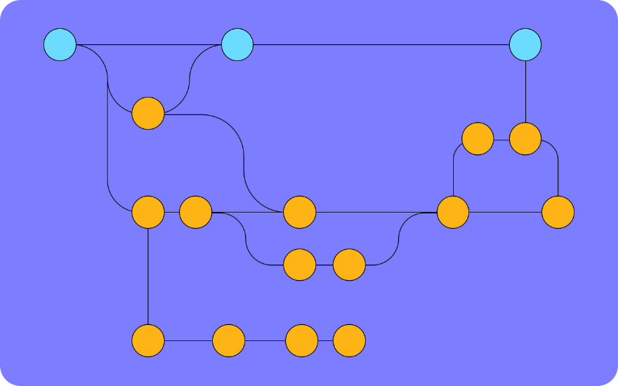
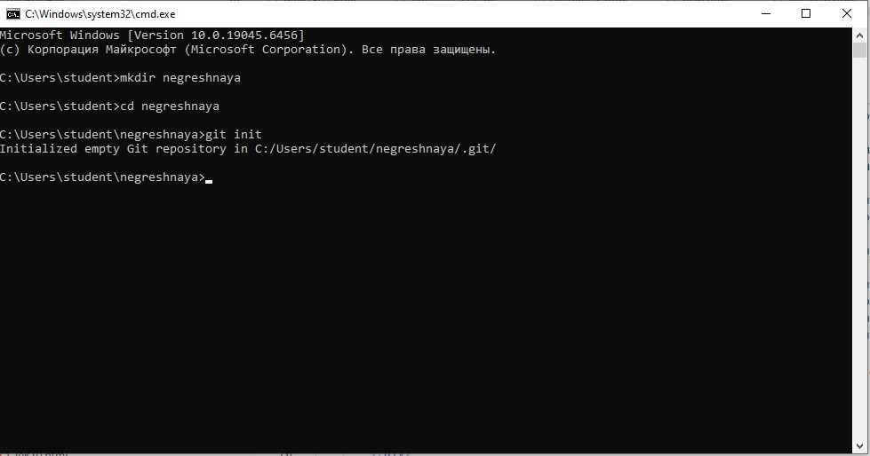

Git — это специальная программа, которая позволяет отслеживать любые изменения в файлах, хранить их версии и оперативно возвращаться в любое сохранённое состояние.
Большинство других систем контроля версий хранят информацию в виде списка изменений в файлах. Git работает иначе — он хранит скорее набор снимков — полное отображение того, как выглядит файл в момент сохранения. Это позволяет всегда иметь полную информацию обо всех файлах и быстро восстанавливать любую из предыдущих версий.
Рассмотрим, как это работает, на примере.
Есть проект, в котором пишется код. В нём создано окружение Git ― все изменения файлов отслеживаются в рамках настроенных параметров и заданных фильтров. Нужно добавить в проект новую функцию, изменив или доработав существующий код. Для этого потребуется создать внутри проекта отдельную ветку — в Git они называются branch. Работа в этой ветке никак не затрагивает основной код — если с новыми изменениями что-то пойдёт не так и код станет невалидным и перестанет запускаться, основной проект не пострадает. А когда новая функция будет дописана и протестирована, ветку можно будет «наложить» на основной код.
Также в рамках Git можно объединять разные версии кода в один. Например, над проектом трудится несколько программистов, и каждый разрабатывает или изменяет код в собственных ветках. В конце работы появится необходимость слить ветки вместе — и получается цельная программа. Это значительно облегчает совместную работу, так как не нужно ждать, пока другой разработчик допишет код, — можно работать параллельно.
Если же в одной из веток разработка пойдёт не по плану и произойдёт ошибка — всё можно просто откатить до предыдущей ветки в системе контроля версий Git, где ошибок не было. И начать разработку заново.
Визуально ветки можно представить в таком виде. Линия с голубыми кружками — основной проект. Остальные — ветки и ответвления, которые периодически сливаются или остаются в стороне, если этого требует разработка
Распределённая система лучше всего подходит для командной работы. Даже если с центральным хранилищем что-то случится, проект можно восстановить из копий участников команды.
Удобство и гибкость сделали Git стандартом для большинства современных IT-компаний. Поэтому умение работать с ним критично для любого программиста.
Основные термины — репозиторий, ветка, коммит, форк.
Это просто корневая папка с файлами и вложенными директориями вашей программы — и одновременно её страница на GitHub. Загрузить в репозиторий можно всё что угодно, но предполагается, что вы будете хранить в нём файлы с исходным кодом и какие-нибудь дополнительные материалы — допустим, необходимую для GUI или вёрстки графику (картинки, иконки и тому подобное).
Репозитории могут быть публичными и приватными, в них можно создавать другие папки и отслеживать изменения версий. Управлять своими репозиториями можно прямо через интерфейс сайта, командную строку, десктопное приложение GitHub или различные средства разработки (IDE), поддерживающие интеграцию с сервисом.
В ветки группируются изменения и обновления — допустим, одна главная ветка (по умолчанию создаётся main) и одна beta. Ветки независимы друг от друга, но при желании их можно объединять (merge — слияние) — даже если между ними есть разница в коде.
Внести в содержимое репозитория изменения можно напрямую или создав копию. Само внесение изменений называется «коммит» (от английского commit — совершить), у него есть временная метка и хеш-сумма.
Перенос изменений-коммитов из локального репозитория (на вашем ПК) на удалённый (remote repository, то есть в данном случае на GitHub) называется «пуш» (push) — от английского «толкать» (дословно — «проталкивать» изменения).
Если вы форкнули чужой проект, чтобы предложить автору конкретные улучшения, нужно по готовности «запулить» их в исходный репозиторий — то есть сделав pull request (запрос на изменения).
Принципы работы с GitGit — мощный инструмент со множеством различных возможностей. Если изучить их досконально, можно серьёзно облегчить себе работу.
